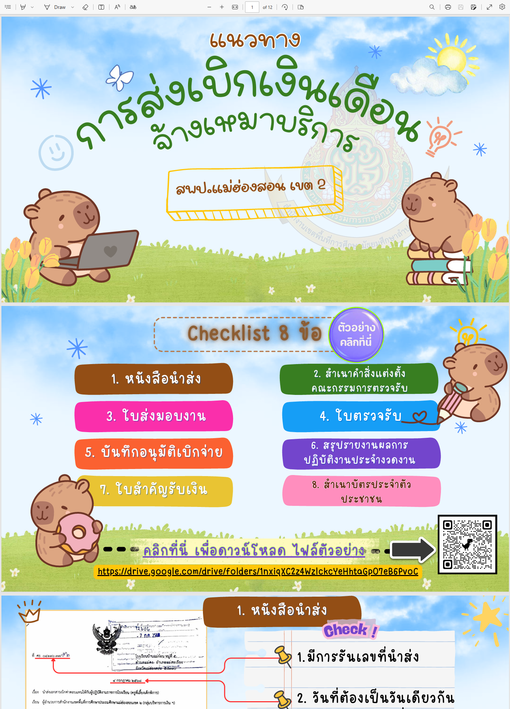
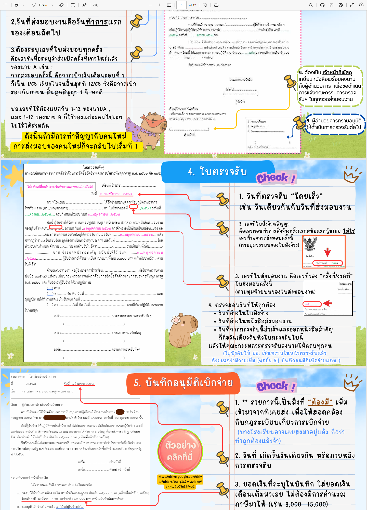
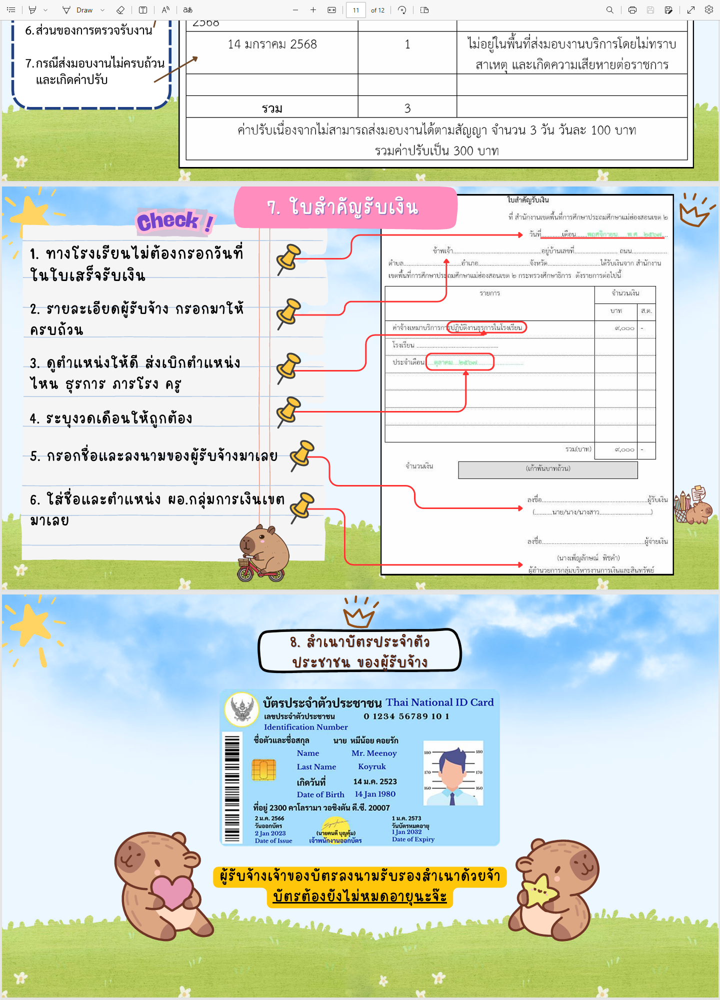

ตั้งต้นจัดซื้อจัดจ้าง
แต่งตั้งคณะกรรมการ กำหนด TOR และราคากลาง
ราชการ · Workflow Design · Visual Guide
สรุปเส้นทางตั้งแต่ต้นเรื่องการจัดซื้อจัดจ้าง ไปจนถึงการส่งเบิกเงินรายงวด ให้อ่านง่าย เห็นภาพชัด และกดไปดูเอกสารตัวอย่างได้ทันที
Overview
แต่งตั้งคณะกรรมการ กำหนด TOR และราคากลาง
รับใบเสนอราคา ประกาศผู้ชนะ และเข้าสู่สัญญา
ทำงานตามใบสั่งจ้างให้ครบในแต่ละงวด
จัดเอกสาร 8 ชิ้น ตรวจรับ อนุมัติ และเบิกจ่าย
Section 1
ต้นเรื่องตั้งแต่เริ่มขออนุมัติ จนพร้อมนำไปสู่การทำสัญญา / ใบสั่งจ้าง
รวมเอกสารตัวอย่างของแต่ละตำแหน่ง ใช้ประกอบ section 1 และ section 2
แต่งตั้งคณะกรรมการกำหนด TOR และราคากลาง และอาจขอตั้งคณะกรรมการตรวจรับไปพร้อมกันได้
ผู้ถูกแต่งตั้งกำหนดขอบเขตงานและราคากลางให้ตรงกับลักษณะงานที่โรงเรียนต้องการ
เมื่อ TOR เสร็จสิ้น คณะกรรมการรายงานผลการจัดทำ TOR และราคากลางเพื่อใช้เดินขั้นตอนถัดไป
มี TOR + ราคากลาง + รายงานผล พร้อมส่งต่อไปสู่รายงานขอซื้อขอจ้าง
Section 2
ช่วงเปลี่ยนจาก TOR ไปสู่การเลือกผู้รับจ้าง และประกาศผู้ชนะ
เข้าไปเทียบฟอร์มรายงานขอซื้อขอจ้าง ใบเสนอราคา และประกาศผู้ชนะได้ทันที
จัดทำรายงานตามขอบเขตของงาน และสามารถแต่งตั้งคณะกรรมการตรวจรับในขั้นตอนนี้ได้
ตรวจดูว่าข้อเสนอและราคาเหมาะสมกับ TOR หรือไม่ ก่อนตัดสินใจเลือกรายผู้รับจ้าง
เมื่อได้ผู้ชนะแล้ว จึงประกาศผล และเรียกมาทำสัญญา / ใบสั่งจ้างตามขั้นตอน
ปลาย section นี้ต้องได้ “ผู้รับจ้างที่ผ่านการพิจารณา” และพร้อมเข้าสู่สัญญาหรือใบสั่งจ้าง
Section 3
ตัวอย่างลักษณะงานที่ผู้รับจ้างปฏิบัติตามใบสั่งจ้างให้เสร็จเรียบร้อยในแต่ละเดือน
งานภาคสนามที่วัดผลจากชิ้นงานและความเรียบร้อยของพื้นที่
งานบริการเชิงวิชาการที่ต้องส่งมอบตามขอบเขตและช่วงเวลาของงวดงาน
งานซ่อมบำรุงที่ดูผลสำเร็จจากการใช้งานได้จริงและการตรวจรับงาน
งานเอกสารหรือบันทึกข้อมูลที่ต้องมีผลงานและปริมาณงานอ้างอิงได้
แต่ละงวดต้องจบด้วย “งานที่ทำเสร็จและตรวจรับได้” เพื่อให้ section 4 เดินต่อได้ลื่น
Section 4
สรุปจากไฟล์ PDF ที่แนบ: โครงหลักเป็น checklist เอกสาร 8 ชิ้น พร้อมจุดตรวจสำคัญก่อนอนุมัติเบิกจ่าย
เปิดดูคู่มือส่งเบิกและแบบฟอร์มอ้างอิงใน Google Drive ได้จากปุ่มนี้
เริ่มจากหนังสือนำส่ง ใบส่งมอบงาน และเอกสารคณะกรรมการตรวจรับให้ครบก่อนตรวจรับจริง
ออกใบตรวจรับ สรุปรายงานผลการปฏิบัติงานประจำงวด และเตรียมบันทึกอนุมัติเบิกจ่าย
แนบใบสำคัญรับเงินและสำเนาบัตรประชาชน ตรวจความครบถ้วน แล้วส่งเข้ากระบวนการเบิก
Captured From Manual.pdf


